Things I've tried: Chasing the Indie Gamedev Dream
In 2007, at the age of 22, I decided to resign from what was arguably my first real software engineering job to enter an indie gamedev competition: The MOTODEV Game Developer Challenge. The competition was Motorola's attempt at bringing indie gamedevs in to develop new game IP for their at the time flagship KRZR K1 handset.
My entry to the competition was Mad Kaz, a vertical platformer backed by a custom game engine I had built specifically for the competition. This post recounts the story of how Mad Kaz came to be, pieced together from old memories and archival records. It follows the highs and lows of its development timeline, along with what happened in the immediate aftermath.
Mad Kaz is a vertical platformer where you lead the title character through a series of unique levels, each crazier than the last. Mad Kaz features six zones with between four to ten levels per zone, and eight different game modes. Built on top of a unique engine, Mad Kaz allows users to create their own levels with customized game play, cinematics, music, and style. Levels can be uploaded onto phones via either Bluetooth or the Internet. The source code packages for the engine, levels, and SDK can be found on the CodeYield Development site.
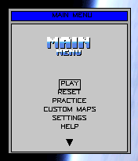
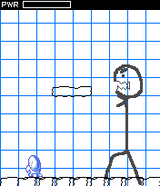
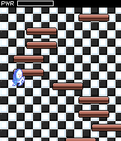
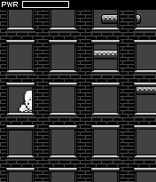
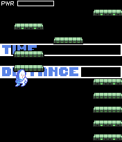
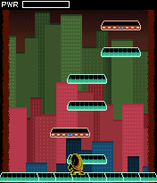
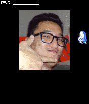
Entering the competition
The MOTODEV Game Developer Challenge opened to contestants on February 21, 2007, running until August 10, 2007. The origins of where I learned about the competition are lost. Chances are that it was through promotional material I encountered while on the job. My employer at the time, airG, developed a popular social networking app for a broad range of handsets and carriers. Employees often had access to the latest mobile devices, along with developer marketing material from handset manufacturers.
Mid-March, about two weeks before my employment at airG ended, I began work on the competition. Because I was still employed for those two weeks, I technically couldn't begin work on the entry itself. Instead, I focused on prep work. The competition's submission form required a company name, so one of the first things I did was register an LLC. On the evening of March 23, 2007, the company CodeYield Development was registered with the province of British Columbia. An hour later, the domain name codeyielddevelopment.com was registered. The day after, I created a company logo. A week after that, a high school friend delivered the company website he created for me incorporating that logo.
As my last few days of employment closed in, I went to dinner with a few close friends and coworkers. I privately let them know that I was leaving to enter the competition. Prior to that, I hadn't disclosed my plans to anyone. The competition did have a prize. It was a publishing contract with a mid-tier mobile game publisher and a collection of free Motorola devices, both of which I was interested in. But, there was something more as well: the hidden prize. The hidden prize, I was hoping, would be a stepping stone for me to get into something bigger and better.
Early April, I officially began work on my entry. My original idea was a top-down 2D MMO virtual world, similar to Habbo Hotel but for mobile phones. I had pitched a similar idea to one of airG's owners a while back, at a lunch he had taken me to as a reward for fixing a costly bug. He didn't like the idea. An MMO would be costly to produce and the market for it would be a tiny fraction of mobile phone owners. Mobile phones around that time were severely constrained and mobile Internet connectivity was slow and expensive. Only those with high-end phones and mobile Internet would be able to play.
Building the engine: The MMO that never was
Even with all of the drawbacks, I still wanted to make the MMO. At the time, I had around $7,500 to my name and was still living in my parent's home, in the same bedroom I grew up in. Before I could do anything, I needed a KRZR K1 or similar device. I went to a local store selling imported handsets and picked up the closest device in stock to the KRZR K1, the Motorola SLVR L7. Alongside that I purchased a Samsung SGH-D520, just so I could have another device to try playing the game on.
With the devices in hand, the next step was to prep my bedroom as a work area. With only 3 to 4 months left to deliver, I needed to minimize distractions. I took my mother's thick faux-fur blanket and duct taped its edges to the walls bordering my 108sqft bedroom's only window, effectively blacking out the room. The only light available to me, I thought, should be the light from the monitor directly in front of me.


_-_Front_(Open)_1280w_Q70.avif)

I started out by making a plan. I charted out tasks and timelines in a Gantt chart, mocked out a UI flow, and mocked out a demonstration map. The idea was to have the MMO be a platform more so than a game. Scripts and assets would flow directly from the Internet, driving the game's logic and gameplay. The ultimate goal was to have a massive explorable world where users themselves would grow out the content.


From a technology perspective, everything in the plan was attainable, but not by a single developer with 3-4 months of time. The timelines, which were already wishful thinking to begin with, showed that development would stretch far past the competition's deadline of early August. And so, the MMO idea was a non-starter.
What wasn't a non-starter were the components in that timeline. Many of them, I figured, would be needed regardless of the game I eventually decided on making. Between April 3 and April 10, I implemented the font renderer. The font renderer would work around the issue of inconsistent default fonts on Java phones by manually drawing out custom character glyphs.
A few days later, between April 12 and April 14, I implemented a lightweight Huffman tree. Mobile Internet connectivity back then was billed by usage. Huffman compression could save the player from an expensive mobile Internet bill.
A few days after that, between April 14 and May 3, I implemented a barebones virtual machine and assembler. A virtual machine would separate the game's logic from its executable, similar to how QuakeC separated Quake's engine from the seemingly endless number of player-created maps and mods.
Yet a few days after that, between May 4 and May 7, I implemented image transformation functions and real-time audio mixing. The image transformations would make the game's art assets more flexible. The audio mixer, which worked on the emulator but not on the actual device, was intended to work around the device limits on playing multiple audio file at the same time.
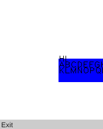
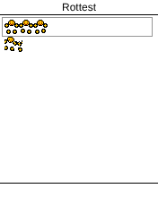
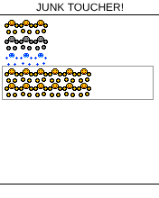
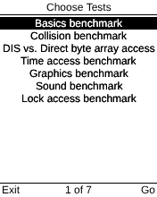
Between early to mid-May, around the time the image and audio components were implemented, was when I finally settled on the game I wanted to implement.
Cutting scope: Choosing Mad Kaz
I decided that the game I wanted to implement would be a re-imagining of NS-SHAFT and NS-TOWER blended into one. NS-SHAFT and NS-TOWER were introduced to me by a college classmate as a way of killing time while we were held up in the computer labs. The twist with this re-imagining was that it'd be a narrative experience with levels, where each level would be unique in terms of graphics, audio, and gameplay mechanics.
I came up with the set of levels that I wanted the game to have. The title character, Mad Kaz (that's me, I'm Kaz 🙂), would climb up from inside the Earth and eventually out into space, before encountering a boss battle and falling back down to Earth: Original level plan document. I named it Mad Kaz - The Beginning.
Shortly after, I began looking for contract artists to help piece it all together. For music, I found a Norwegian chiptunes musician by the name of Xonic the Fox. Xonic, around 19 at the time, produced 3 MIDI tracks based on a small set of requirements to hit certain evocative themes. For concept art, I reached out to an old high school classmate, William, to create a few basic sketches. There were no requirements. I simply asked him to envision how things should look. For pixel art, I found Mykola, a Ukrainian pixel artist who was around 22 at the time. Mykola agreed to help reimagine the concept art as pixel art. Some of his art for the game is still up on his old PixelJoint profile here and here.
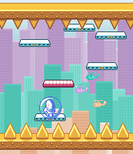
Closest surviving archive of Mykola's website (July 2007): Myk31.


- Danger Zone, original MIDI
- Road Warrior, original MIDI
- Solitude, original MIDI
Closest surviving archive of Xonic's website (September 2007): Technomancer.
Cutting scope, again: Spread too thin
Even with a plan and the extra help, it turned out that it was all still too much. The roughly 3 remaining months weren't enough time to both complete the game's engine and build out that much game logic and art. Pixel art didn't start flowing in until mid-June. I hadn't begun coding up the majority of the game's levels, outside of a few practice levels, until mid-July. Before that, I was still primarily trying to put the pieces of the game's engine together.
In old emails from Mykola, I could see that I wasn't keeping it together. Keeping myself confined to a blacked out room wasn't helping. With no outside light seeping in, it was impossible to tell if it was day or night. I would sleep and wake at random times, sometimes opening the bedroom door to use the kitchen or washroom thinking it was daytime only to realize it was the dead of night.
From: Mykola <m***@g***.com>
To: Kasra F. <k***@c***.com>
Date: Wed, 13 Jun 2007 02:49:06 PDT
Subject: Re[2]: Progress?Man what the hell, don't get pissed.
look I told you I got sick with flu last week, I know you're pissed by it but
so am I - cuz there's nothing I could do about it.
I'm still not 100% but now I can at least use my computer normally so
things should be ok.I'm absolutely not gonna drop out, that's for sure. Don't panick man!
Please.NOW. on to the game itself.
I like both the music and the concept art. music is a good fit to the
game I believe.I attached some gfx you requested first. some floor tiles + the player
sprite.notes:
[...]let me know what you think bout these :) and then I'm moving on to
more gfx.
I decided to cut scope again. I scrapped the original level design and instead restructured the game into zones. Each zone would have multiple levels that re-used assets and had similar game logic, similar to the original Sonic The Hedgehog games.
The original plan was to have 12 unique levels. The new plan was to have 6 unique zones: Intro, Homework, Hippie, Time Trials, Giagantor, and Author. The opening and closing zones, Intro and Author, were write-offs. Author Zone was nothing more than a single level that acted as a credit sequence, paying homage to friends and those who worked on the game. Intro Zone was a tutorial, getting the player familiar with gameplay mechanics. The 4 zones in between were the real content: Zone breakdown and analysis.
Chronologically, these zones were built in a different order than they appeared in-game.
- July 13-14, zone 1, Intro Zone, was built.
- July 16-19, zone 2, Homework Zone, was built.
- July 19-23, zone 6, Author Zone, was built.
- July 21-26, zones 3 to 5, Hippie Zone, Time Trials Zone, and Giagantor Zone, were built.
Homework, the zone chronologically sandwiched between Intro and Author, was the zone closest to Mad Kaz's original story arc. It had cityscape climbing, racing downward to outrun a bomb, and there was even a boss fight. I built it because I wanted a zone where I didn't have to go back and forth with my pixel artist, Mykola. I pieced together the art myself, fleshing out poorly drawn schoolbook-doodle style graphics in Microsoft Paint: Graph paper, pencil drawings, stick men, etc. The remaining zones 3-5 were added afterwards by gluing together various pixel art pieces into something that bordered on being passable.
I fleshed out these zones for as long as I could hold out. July 26th was when the last zone was completed. Bugfixes and tweaks ran through July 27th and 28th. There wasn't enough left in me to do much else after that. Even though there were still roughly 2 weeks remaining until the competition deadline, I was spent. I could have used that time. I never sat through a full playthrough of the entire game, or even a full playthrough of certain zones within the game. I could have balanced the gameplay to make it fun to play (it wasn't). I could have fixed typos. I could have finished implementing the game engine's networking component. The list goes on.
And so, in the end, Mad Kaz wasn't so much a game as much as it was a tech demo for a game engine. The 4 months I had spent putting things together weren't enough for me to build out both a game engine and the game's originally intended levels. The result was a mishmash of unbalanced and narratively disjointed levels that tried to shove in as many engine features as possible.


Mad Kaz's code: The game's source code and assets, as they were on submission.
Mad Kaz game: The game as it was on submission, converted by AI such that it's playable inside a browser.
Submission: The anticlimax
I submitted Mad Kaz into the competition on July 29th, 2007, about 2 weeks before the August 10th deadline. A confirmation email arrived the next day, and that was it. I never heard back from the people running the competition about their thoughts on Mad Kaz or how it ranked against other games in the competition. I showed the game to a couple of my real-life friends. They thought it was alright. I had an online friend load it up on his phone and give it a try. He thought it was alright. I posted some screenshots in an IRC chatroom. Someone replied saying the graphics were bad. I wrote my father informing him of what I had been up to after 4 months unemployed. His response was that I would always be a winner to him. And, that was it.
From: MOE F <m***@s***.ca>
To: Kaz F <k***@h***.com>
Date: Tue, 31 Jul 2007 19:12:07 PDT
Subject: Re:Hi Kasra,
I saw your game, You did a fantastic work, I am very proud of you. With
all hope and good luck to you you are the best, anyway you are a
winner to me.Cheers!!!!
Kambiz
----- Original Message -----
From: Kaz F <k***@h***.com>
Date: Tuesday, July 31, 2007 4:49 pm
Subject:
To: m***@s***.ca> Hey Kambiz,
>
> Here's what I've been working on for the past 3 or so months. I
> entered it into the Motorola competition a couple of days ago. It
> was designed to run specific Motorola phones and some other
> phones (Motorola Vxxx, Motorola SLVR, Motorola K1, Samsung SGH-
> D520, etc.. etc..), so you can't play it on your phone.
>
> http://www.codeyielddevelopment.com/madkaz.php
Looking back, there was an expectation that sending in the submission would result in some kind of defining moment of pride and accomplishment. Instead, it was dejection and regret. Maybe it was because my entry wasn't what I had hoped for, or maybe it was because I subjected myself to 4 months of self-imposed confinement devoid of natural light and was verging on going broke.
Aftermath: Back to reality
Around that time, I was using a spreadsheet to keep track of my checking and savings balance. Money was beginning to run tight. The records show that I started the competition with around $7,500 to my name. By the time I submitted Mad Kaz in late July, I had around $1,500. A month later, it went down to $1,100. A month after that, it went further down to $600.
In early August, shortly after the submission was in, I began looking for work again. I sent applications to whatever places were looking to hire, but I was also trying to leverage my work on Mad Kaz to get hired at a game studio. I had decided to open-source the game's code and assets so potential interviewers could review what I did and hopefully come to the conclusion that I was skilled enough. I had submitted applications to Radical Entertainment, Threewave, Blue Castle Games, and a mobile game developer named IUGO. None of these studios are around anymore.
The application to Radical Entertainment went nowhere. Threewave had me fill out a questionnaire and did schedule a phone screen afterwards, but ultimately it didn't move forward either. I knew Threewave from their work on the Threewave CTF mod for Quake 1, which I regularly played growing up.
Blue Castle Games had me come in for an interview. They were hiring for a junior network programmer for Dead Rising 2. Network programming for twitchy games was something I often thought about, mostly because of stories I heard about QuakeWorld's networking code. And, more importantly, Mad Kaz did have an unfinished networking implementation that was stripped out at the last second.
The interview lasted two hours. One of the interviewers had gone through Mad Kaz's code. "So, this virtual machine of yours, all it is is a for loop?" Thinking it was a deliberate attempt to get under my skin, I flatly responded "Yeah. Sure." Later, during a whiteboarding segment, I was talking out a problem on how to model zombie swarm movements. When one of them jumped in with a question, without thinking I blurted, "Wait, shut up" as a new thought entered my head. At the end was my first experience with interview brainteasers. The final interviewer asked me the three-prisoners hat riddle. It wasn't something I prepared for. I froze in a deer-in-the-headlights moment.
From: Melissa S <m***@bluecastlegames.com>
To: 'Kasra F' <k***@***.ca>
Date: Mon, 10 Sep 2007 18:28:08 PDT
Subject: RE: Interview Next Steps from Blue Castle GamesHi Kaz,
There will be two interviews - one from 10-11 and another from 11-12.Dee J
will be there, as will James H (Technical Director), Victor C
(Programmer), and Tom N (Sr. Programmer). I will meet you when you
arrive and get you settled in.The interviews will cover a mix of technical and "soft" skill questions. I
can't tell you the exact questions they will ask, but I can tell you that
they will ask you to do some coding work on a white board in addition to
answering questions orally.Hope that helps! I will send you the NDA and directions tomorrow morning.
Have a good night!
Melissa S
[...]
IUGO interviewed me after a personal appeal. It barely resembled a traditional interview. When I walked in, I was greeted by a friendly college acquaintance, not knowing he worked there at the time. One interviewer sat me down with a stack of papers full of game coding and design questions. When I was done, he tossed them aside, saying something to the effect of "I don't need to look at it. I know you know your stuff."
At the end of the interview, I spoke with the CEO. He had either given me an offer or was on the verge of giving one. I ended up walking away. I don't recall exactly why. It may have been because I was actively interviewing at Blue Castle Games, or I may have been feeling too full of myself and gunning for a more senior role, or it may have been because the office felt uncomfortably bright. It was a bright sunny day that day. IUGO's office space let a lot of that sun in. I had spent most of my time building Mad Kaz in my blacked-out bedroom.
From: Hong-Yee W <h***@iugome.com>
To: 'Kaz F' <k***@h***.com>
Date: Wed, 05 Sep 2007 13:57:30 PDT
Subject: RE: Application for J2ME/BREW ProgrammerHi Kazra,
Let's try this again. Please come in for an interview tomorrow (6 Sep) at
11am. Our office address remains unchanged - see below.[...]
_____
From: Kaz F [mailto:k***@h***.com]
Sent: Thursday, August 02, 2007 3:20 PM
To: hy@iugome.com
Subject: RE: Application for J2ME/BREW ProgrammerHey Hong,
I'm just getting in touch with you to give you an update on my status. I
gave in my resignation at AirG a little while after initially sending in my
resume to IUGO so that I could take part in the Motodev game developer
challenge. I made sure to incorporate before I made my submission (strictly
for liability reasons). You can find the game and source code (GPLv3) on my
website. If any other positions at IUGO open up that you think I'm qualified
for, don't hesitate to give me a shout.I've attached my resume in case you want to glance it over again.
- Kaz
_____
From: h***@iugome.com
To: k***@h***.com
Subject: RE: Application for J2ME/BREW Programmer
Date: Mon, 20 Nov 2006 13:37:58 PSTHi Kasra,
Please come in for an interview tomorrow (20 Nov) at 3pm. Our office is in
Yaletown: [...]-----Original Message-----
From: Kaz F [mailto:k***@h***.com]
Sent: Sunday, November 19, 2006 5:51 PM
To: h***@iugome.com
Subject: Application for J2ME/BREW ProgrammerDear IUGO HR Department,
This letter is to express my interest in discussing the mobile game developer position posted on the IUGO website. [...]
In the end, I was getting dangerously low on funds and so I accepted a job at a company that made calendar software. The salary was around 15% lower than that of the original job that I had resigned from.
Addendum: Engine postmortem
Although the story of Mad Kaz is now over, I'd like to take a moment to write about the part of Mad Kaz that I found the most interesting: Mad Kaz's engine, obviously. Mad Kaz's engine was the collective, blended result of my experiences around gaming and coding, starting from early childhood experiments on the first family PC my father purchased in the early 1990s all the way up to the job I resigned from to enter the competition.
As a game, Mad Kaz failed. As a game engine, it succeeded at doing something few at the time had even attempted: It was a UGC platform for the resource-constrained mobile devices of that era. The individual components of the engine weren't all that unique or original. Doom had already popularized pack files, Quake had already popularized scripting, QuakeWorld had already popularized in-game level downloads, countless games performed dynamic audio mixing and graphical post-processing, etc. It was the collection of those individual components together under a single umbrella, running successfully on a resource-constrained Java device, that made for something special.
Many of the individual components within Mad Kaz were born out of my experiences at airG, a company that's still around: https://corp.airg.com. airG's R&D head at the time was forgiving enough to look past my attitude problem and let me work under him. He made several attempts at a scriptable platform for their mobile apps. Those scriptable platforms, along with Java's virtual machine and Quake's virtual machine, became the inspiration for Mad Kaz's virtual machine and assembler.
Mad Kaz's PNG editing module was inspired from overhearing a watercooler discussion at airG. A senior engineer mentioned how someone they knew wrote code to go in and edit a PNG's palette at runtime. After hearing that, I visited a now-defunct website known for documenting file formats, pulled out the specifications for PNG, and spent a few days at work trying to come up with interesting things to do with palette modifications.
Mad Kaz's image manipulation functions were inspired by a college classmate who also worked with me at airG. He was the same that introduced me to NS-SHAFT and NS-TOWER. While sitting in a college computer lab one day, he had written code to resize an image using bilinear scaling. We didn't know that it was called bilinear scaling at the time, but his idea of pixel-to-pixel gradients was the seed for Mad Kaz's image rotation, scaling, and post-processing effects.
Mad Kaz's image manipulation functions required rational numbers, but most mobile phones at that time didn't include a hardware floating point unit. Somewhere along the way, I had learned about fixed point math and lookup tables. I used fixed point math to implement a progress bar in one of airG's apps, and I also used it to perform the image manipulation math in Mad Kaz.
The list goes on. It was all prior art that, at some point or another, I had experienced and internalized in some way: Coding timeline.